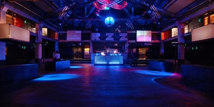
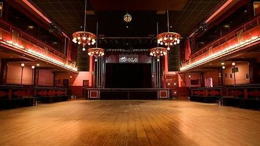
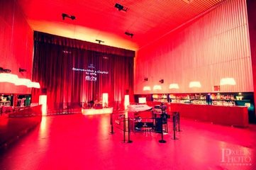
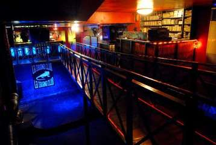
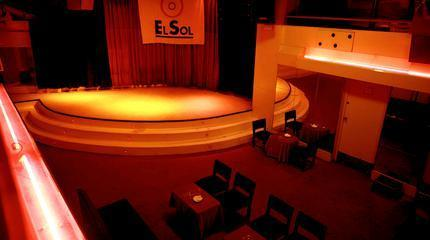
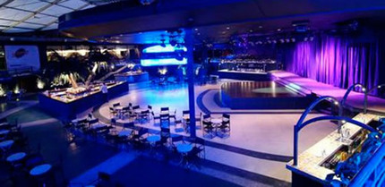
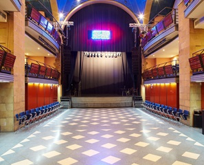
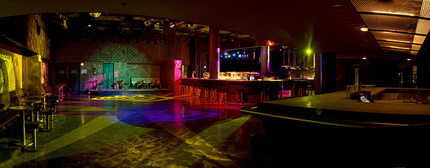
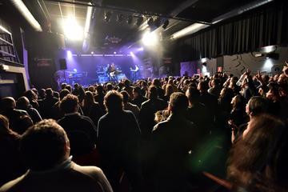

Salas de Concierto
Sala Razzmatazz
Es una discoteca y sala de conciertos de Barcelona. Su nombre alude a la canción del mismo título de la banda británica Pulp. Se programan distintos tipos de música, aunque los estilos que tienen más presencia son el indie pop, rock alternativo y la música electrónica. Su DJ residente más conocido es DJ Amable. Hasta el 2006 también contó con Aleix Vergés, alias Sideral (1973-2006). La discoteca esta dividida en tres salas: la primera tiene una capacidad para 2.000 personas; la segunda para 1.000 y la tercera para unas 200 personas aproximadamente.
Apolo
Situada en uno de los principales núcleos de ocio nocturno de Barcelona, en sus inicios se posicionó como una de las salas con más variedad y oferta musical de la capital catalana. Abrió sus puertas en 1946 como sala de baile y fue en 1991 cuando se iniciaron las programaciones de conciertos. En 2006 fruto de su enorme éxito se inauguró la expansión de Apolo, un espacio anexo que dio cabida a 400 personas más.
Sala Capitol
El Cine y Teatro Capitol Gran Vía de Santiado de Compostela, gestionado en su parte teatral por los profesionales de Grupo Smedia, cuenta con una gran sala principal de 1357 butacas que alterna espectáculos teatrales y proyecciones cinematográficas. La sala 2 dedicada a teatro cuenta con una capacidad de 217 butacas. Gran parte de sus espectáculos están dedicados a conciertos de todo tipo de estilos musicales, como el pop o el rock entre otros.
La Iguana Club
Los entusiastas del rock’n roll tienen sus conciertos asegurados en esta conocida sala. Por la zona de Churruca, en Vigo, La Iguana Club, con dos pisos en plan garaje, es un punto de encuentro para todos los aficionados a este género. Dedicada a ofrecer actuaciones en directo
El Sol
La sala nació en 1979, en Madrid, y desde entonces ha organizado más de 7.000 conciertos de muchos de los artistas nacionales e internacionales más destacados del panorama musical. Según se baja por su ya clásica escalera de caracol, se accede a un espacio con dos barras en cada lado y el escenario.
La Riviera
Es una discoteca al aire libre emplazada a orillas del Manzanares. Es el único local aclimatable de la capital, lo que la convierte en un oasis todas las estaciones del año en pleno centro de Madrid. La sala ha visto pasar casi cinco décadas de magia nocturna, convirtiéndose en una de las que más importantes y variados eventos ha celebrado en Madrid. Con 1.500 metros cuadrados, presididos por un espectacular escenario que puede adaptarse para organizar cualquier acontecimiento.
BilboRock
Está ubicada en lo que fuera la antigua iglesia de La Merced, un edificio barroco construido entre 1663 y 1673 en el muelle del mismo nombre, junto a la ría y frente al Casco Viejo. Con una superficie de 1.330 metros cuadrados, tres plantas diferenciadas y un equipamiento tecnológico de última generación. El reconvertido templo cuenta con una capacidad para 300 espectadores sentados o 500 de pie.
Bikini
Inaugurada en 1953, la sala forma parte de la mejor historia nocturna de Barcelona. Ubicado en la zona alta de la Ciudad Condal se trata de un espacio abierto a todo tipo de propuesta de ocio: discoteca, sala de conciertos, pasarela, presentaciones, fiestas de empresa… Poseen uno de los más modernos y completos equipamientos de sonido para conciertos de España y cuenta con una excelente acústica. La sala goza de tres ambientes diferenciados donde se puede disfrutar de muchos estilos de música.
Sala Custom
Una de las mejores salas de conciertos de Sevilla, es un nuevo y remodelado espacio de conciertos. Ubicado en el Polígono Calonge, tomando el relevo de la mítica Sala Q sevillana que cerró sus puertas el 31 de diciembre de 2010, Custom tiene un aforo cercano al millar de personas y promete un sonido de calidad gracias a la nueva acústica de la sala para hacer difrutar a su público de conciertos muy buenos de todo tipo de música.